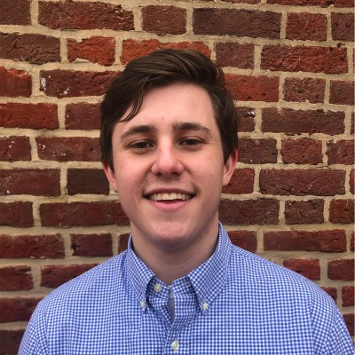

Patrick Britt
Student

Experience
Copywriting Intern
Compass Marketing
May 2020 – Present
Creating SEO content for companies selling their products on Amazon, Target and other major retail marketplaces
Copy Editor
Unwind Magazine
September 2019 - May 2020
Edited stories for AP style, grammar and readability, as well as fact checking each story that comes across my desk
Intern/Contributing Writer
PressBoxOnline
January 2019 - May 2019
Wrote stories and transcribed interviews, as well as fact checked and edited other writer’s stories
Intern/Contributing Writer
Admirable Athlete
September 2018-December 2018
Researched stories and wrote articles about athletes and their philanthropic endeavors
Executive Board Member
Lambda Chi Alpha Epsilon Pi Chapter
November 2019-November 2020
Oversaw entire fraternity and helped to make fraternity-wide decisions. Handled a budget of over $18,000 each semester
Student Representative
University of Maryland Welcome Center
September 2019 - March 2020
Greeted prospective students and assisted them with their questions regarding the application process
Education
- Bachelor of Arts, Journalism, University of Maryland, 2020
Skills
- Critically gather data and assess audience analytics
- Create online content for retail marketplaces with a focus on increasing web traffic through SEO
- Content editing for AP style